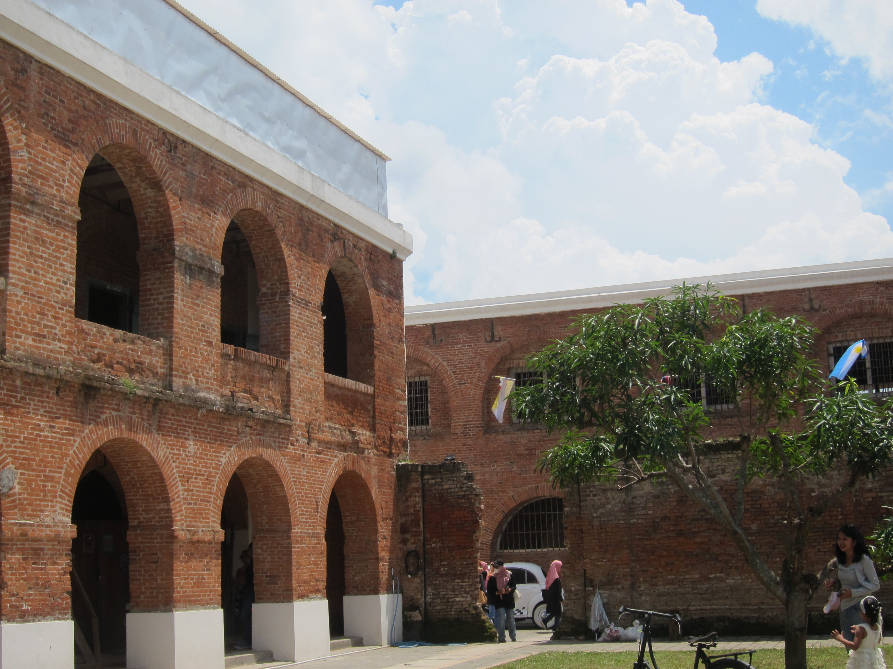

📚 Pertemuan 2: Luas Permukaan Kubus & Balok
Big Idea
Materi Utama Pertemuan 2
Benteng Fort Willem I merupakan bangunan bersejarah yang dapat dimanfaatkan sebagai konteks pembelajaran matematika pada materi luas permukaan bangun ruang sisi datar. Salah satu ruang berbentuk balok memiliki panjang 10 m, lebar 6 m, dan tinggi 4 m, sehingga dapat dihitung luas permukaannya untuk mengetahui luas dinding, lantai, dan atap. Selain itu, terdapat peti berbentuk kubus dengan rusuk 2 m yang juga dapat dihitung luas permukaannya untuk menentukan kebutuhan bahan pelapis.

Struktur bangunan dan lorong di Benteng Fort Willem I yang perlu diperhatikan luas permukaannya saat renovasi.
🏰 Konteks: Untuk merenovasi dinding Benteng Fort Willem I, kita perlu tahu berapa luas seluruh permukaan dinding agar bisa menghitung kebutuhan cat.
Essential Question
Mari kita kaitkan dengan matematika! "Bagaimana cara menentukan luas permukaan kubus dan balok?"
The Challenge
Tantangan:
Di kawasan Benteng Fort Willem I terdapat sebuah menara pengawas kecil berbentuk kubus dengan panjang rusuk 5 meter. Menara tersebut akan direnovasi dengan cara mengecat seluruh bagian luar kecuali bagian bawah yang menempel pada tanah.
Di dekat menara tersebut juga terdapat sebuah bangunan gudang berbentuk balok dengan panjang 8 meter, lebar 5 meter, dan tinggi 3 meter. Gudang tersebut akan dilapisi pelindung pada seluruh permukaannya.
Diketahui setiap 1 meter persegi permukaan membutuhkan 0,2 liter cat.
Berdasarkan informasi tersebut, tentukan:
- Luas permukaan menara kubus yang akan dicat.
- Luas permukaan gudang berbentuk balok.
- Jumlah cat yang dibutuhkan untuk mengecat kedua bangunan tersebut.
Guiding Resources
Pelajari materi ini untuk memudahkan tantangan kalian!
🧱 Bangun Ruang Sisi Datar
Bangun ruang adalah bangun yang memiliki panjang, lebar, dan tinggi. Selain memiliki volume, bangun ruang juga memiliki luas permukaan.
Luas permukaan adalah jumlah luas seluruh sisi yang membentuk bagian luar suatu bangun ruang.
Contohnya: Saat kita mengecat ruangan atau melapisi kotak, bagian luar yang terkena cat itulah yang disebut luas permukaan.
🏰 Kembali ke Konteks Benteng
Pada Benteng Fort Willem I, terdapat bangunan gudang berbentuk balok dengan ukuran: p = 10 m, l = 6 m, t = 4 m
Rumus Luas Permukaan Balok
Rumus Luas Permukaan Kubus
Studi Kasus: Peti tentara di benteng berbentuk kubus dengan rusuk 2m.
🧊 Visualisasi 3D Luas Permukaan
Guiding Question
Untuk membantu kalian menyelesaikan challenge, jawablah pertanyaan berikut:
- 1 Bangun ruang apa yang digunakan untuk memodelkan bangunan dan peti tersebut?
- 2 Informasi ukuran apa saja yang sudah diketahui?
- 3 Rumus apa yang digunakan untuk menghitung luas permukaan balok dan kubus?
- 4 Bagaimana cara menentukan jumlah cat yang dibutuhkan berdasarkan luas permukaan?
Guiding Activities
Untuk membantu menyelesaikan challenge, lakukan kegiatan berikut secara berkelompok:
Solution & Action
- ✦ Diskusikanlah dengan anggota kelompok kalian untuk menyelesaikan tantangan yang telah dirumuskan pada bagian Challenge.
- ✦ Gunakan Guiding Resources, Guiding Questions, dan Guiding Activities sebagai panduan dalam proses diskusi dan pemecahan masalah.
- ✦ Tuliskan hasil kerja kelompok pada lembar yang telah disediakan, kemudian siapkan hasil tersebut untuk dipresentasikan dan didiskusikan bersama di kelas.
Assessment Publishing
- ✦ Salah satu kelompok mempresentasikan hasil diskusi di depan kelas.
- ✦ Kelompok lain memberikan tanggapan, pertanyaan, atau saran terhadap hasil presentasi.
- ✦ Peserta didik bersama guru menyimpulkan hasil kegiatan pembelajaran yang telah dilakukan.
Assessment Reflection
Waktunya Refleksi Diri!
Mainkan permainan di bawah ini dan jawablah pertanyaan secara jujur sebagai bahan refleksi diri dari kegiatan pembelajaran yang telah dilakukan.
Rangkuman
Bangun ruang adalah bangun yang memiliki panjang, lebar, dan tinggi. Selain volume, bangun ruang juga memiliki luas permukaan.
Luas permukaan adalah jumlah luas seluruh sisi yang membentuk bagian luar suatu bangun ruang.
Rumus Luas Permukaan Bangun Ruang
Kubus
Luas permukaan kubus = 6 × s²
Balok
Luas permukaan balok = 2(pl + pt + lt)